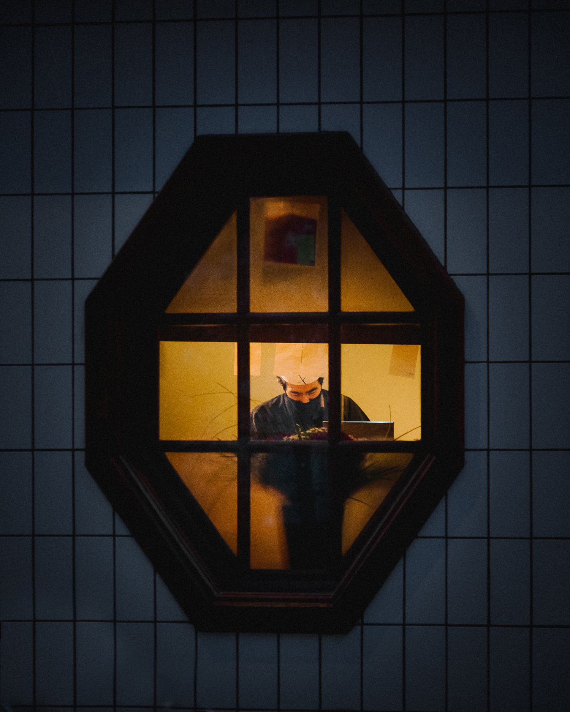

Street Photography
Street is one of my favorites genres, and the one through which I got fully into photography. It is an unpredictable genre, with an environment that is always moving and ever-changing, and which can be conceived in many ways. Ranging from a documentary approach to completely abstract ones, a genre where creativity knows no bounds.
